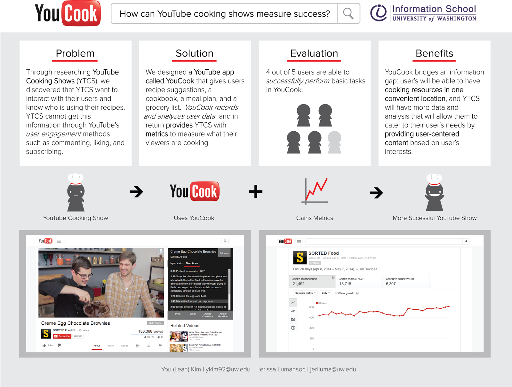

Capstone: A group project to design an app for YouTube Cooking Shows to measure user engagement. I collaborated with Leah Kim to solve an information problem. We found an information problem in YouTube: YouTube cooking shows can't not measure if their viewers are cooking.
Through researching YouTube Cooking shows (YTCS), we discovered that YTCS want to interact with their users and know who is using their recipes. YTCS cannot get this information through YouTube's user engagement methods, such as commenting, liking, and subscribing.
Leah and I designed a YouTube application called YouCook that give users recipe suggestions, a cookbook, a meal plan, and a grocery list. YouCook records and analyzes user data and in return provides YTCS with metrics to measure what their viewers are cooking.
4 out of 5 users are able to perform basic tasks on YouCook.
YouCook bridges an information gap: user will be able to have cooking resources in one convenient location, and YTCS will have more data and analysis that will allow them to cater to their user's needs by providing user-centered content based on user’s interests.

We took a very agile approach in step 3, where we iteratively designed YouCook, tested it, then made changes several times.
Throughout this whole process, we documented all our delivers at: http://projectomnomnom.blogspot.com/*
* Some of the links in the project blog may be broken, such as the prototypes